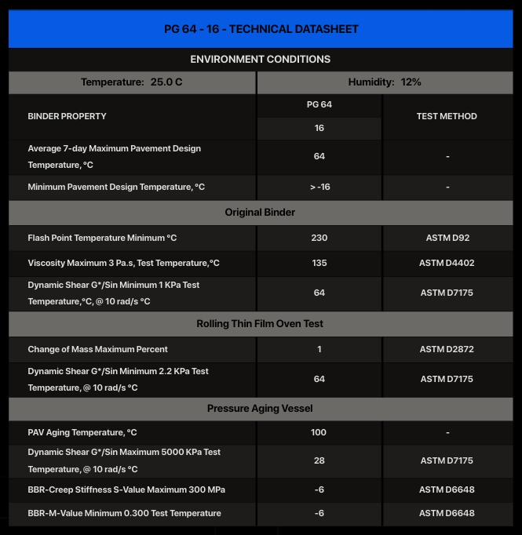

Bitumen PG 64‑16 – General Description │ Iran Bitumen Supply Int │ IBSI
Bitumen PG 64‑16 is a Superpave Performance Grade asphalt binder designed for regions that experience warm to hot summers and relatively mild winters. According to the Superpave grading system, the designation PG 64‑16 indicates that the binder can resist rutting at high pavement temperatures up to 64°C while maintaining enough flexibility to withstand low‑temperature cracking down to –16°C. This combination makes PG 64‑16 suitable for climates where pavements are exposed to significant heat during the summer but only moderate cold during winter months. PG 64‑16 is widely used in pavement structures subjected to medium to heavy traffic loads. Its high‑temperature stiffness helps prevent rutting, shoving, and other forms of permanent deformation under warm climatic conditions, while its moderate low‑temperature performance ensures that the pavement remains resistant to cracking during cooler periods. Because of this balanced performance, PG 64‑16 is commonly selected for highways, regional roads, and urban networks located in warm or transitional climate zones. Manufactured in full compliance with AASHTO M320 specifications, Bitumen PG 64‑16 offers consistent quality and predictable behavior across all production batches. The binder is engineered to meet strict requirements for viscosity, stiffness, elasticity, and aging resistance, ensuring reliable performance throughout the pavement’s service life. Its rheological properties provide excellent workability during mixing and compaction, while maintaining the mechanical strength needed to support traffic loading and environmental stresses
Key Specifications
PG 64‑16 is classified as a Performance Grade asphalt binder with a maximum pavement design temperature of 64°C and a minimum pavement design temperature of –16°C. This grading reflects its ability to resist rutting at elevated temperatures and to remain flexible enough to limit thermal cracking in moderately cold conditions. Compliance with AASHTO M320 confirms that PG 64‑16 meets the required standards for Superpave binders in both original and aged states, ensuring long‑term durability and stable performance.
Main Applications
Bitumen PG 64‑16 is widely used in the construction and rehabilitation of highways, expressways, and regional roads where pavements are exposed to warm summers and moderate winter temperatures. It is also commonly applied on urban streets, municipal roads, and industrial access routes where traffic loading and turning movements demand a binder with good resistance to deformation. Its balanced temperature performance makes it suitable for many regions with warm climates, including areas where summer pavement temperatures are high but winter conditions are not severe.
Key Benefits
The primary advantage of PG 64‑16 is its ability to deliver reliable pavement performance across a broad temperature range. Its high‑temperature stiffness helps prevent rutting and deformation under heavy traffic and warm weather, while its moderate low‑temperature flexibility reduces the risk of cracking during cooler periods. Pavements constructed with PG 64‑16 benefit from extended service life, reduced maintenance requirements, and improved long‑term durability. The binder also provides strong adhesion to aggregates and stable behavior during mixing and compaction, contributing to uniform, high‑quality asphalt mixtures that perform consistently in demanding environments.

Specification of Bitumen PG 64-16